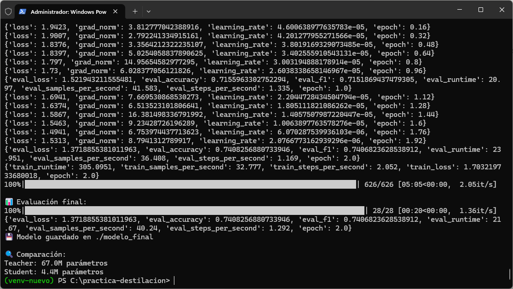
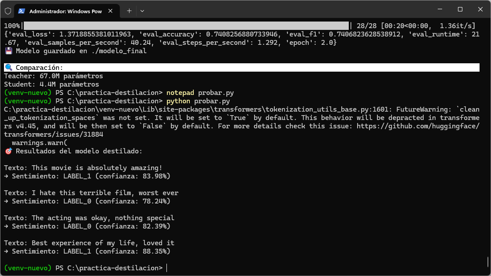
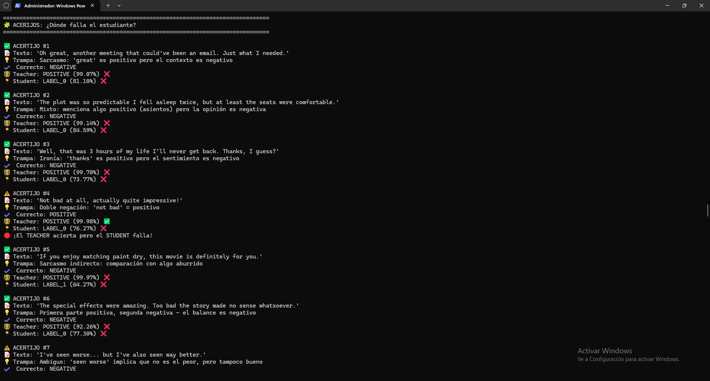
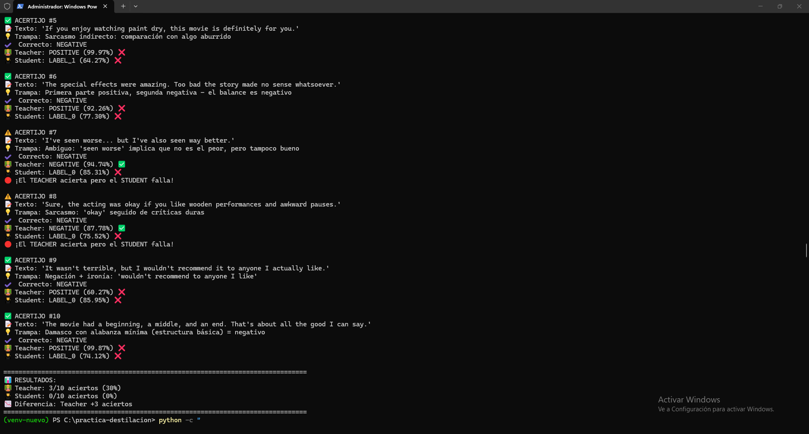

Guía paso a paso en Windows (PowerShell) para destilar un modelo experto en sentimientos a un modelo ligero y comparar sus resultados con frases “trampa”.

En esta práctica vas a tomar un modelo teacher ya entrenado para análisis de sentimientos y destilar su conocimiento a un modelo student mucho más pequeño, manteniendo un rendimiento alto pero con menor coste computacional.
distilbert/distilbert-base-uncased-finetuned-sst-2-english.prajjwal1/bert-tiny adaptado a clasificación binaria.La idea central es que el student aprenda no solo de las etiquetas correctas, sino también de la distribución de probabilidades del teacher (conocimiento “oscuro”).
Abre PowerShell y ejecuta:
mkdir C:\practica-destilacion
cd C:\practica-destilacion
py -m venv venv-nuevo
.\venv-nuevo\Scripts\Activate.ps1Set-ExecutionPolicy -Scope Process -ExecutionPolicy BypassCon el entorno activado, instala PyTorch (CPU) y las librerías de Hugging Face:
python -m pip install --upgrade pip
pip install torch==2.0.1 --index-url https://download.pytorch.org/whl/cpu
pip install transformers==4.44.0 datasets==2.21.0 scikit-learn==1.5.0 accelerate==0.33.0python -c "import torch, transformers, datasets; \
print('Torch:', torch.__version__); \
print('Transformers:', transformers.__version__); \
print('Datasets:', datasets.__version__)"destilar.py)
Crea el archivo destilar.py en la carpeta del proyecto y pega el siguiente código.
Este script:
import numpy as np
import torch
import torch.nn.functional as F
from datasets import load_dataset
from transformers import (
AutoTokenizer,
AutoModelForSequenceClassification,
TrainingArguments,
Trainer,
DataCollatorWithPadding,
)
from sklearn.metrics import accuracy_score, f1_score
torch.manual_seed(42)
teacher_id = "distilbert/distilbert-base-uncased-finetuned-sst-2-english"
student_id = "prajjwal1/bert-tiny"
tokenizer = AutoTokenizer.from_pretrained(student_id)
teacher_model = AutoModelForSequenceClassification.from_pretrained(teacher_id)
student_model = AutoModelForSequenceClassification.from_pretrained(
student_id, num_labels=2
)
# 1. Dataset SST-2 (GLUE)
dataset = load_dataset("glue", "sst2")
def tokenize_function(examples):
return tokenizer(examples["sentence"], truncation=True, max_length=128)
tokenized = dataset.map(tokenize_function, batched=True)
tokenized = tokenized.rename_column("label", "labels")
tokenized = tokenized.remove_columns(["sentence", "idx"])
tokenized.set_format("torch")
# Para ir más rápido durante la práctica (opcional)
tokenized["train"] = tokenized["train"].select(range(5000))
data_collator = DataCollatorWithPadding(tokenizer=tokenizer)
def compute_metrics(eval_pred):
predictions, labels = eval_pred
predictions = np.argmax(predictions, axis=1)
return {
"accuracy": accuracy_score(labels, predictions),
"f1": f1_score(labels, predictions, average="weighted"),
}
# 2. Trainer con destilación
class DistillationTrainer(Trainer):
def __init__(self, teacher_model, temperature=2.0, alpha=0.8, **kwargs):
super().__init__(**kwargs)
self.teacher_model = teacher_model
self.teacher_model.eval()
for param in self.teacher_model.parameters():
param.requires_grad = False
self.temperature = temperature
self.alpha = alpha
def compute_loss(self, model, inputs, return_outputs=False):
labels = inputs.get("labels")
# Estudiante
outputs_student = model(**inputs)
student_logits = outputs_student.logits
# Profesor (sin labels ni token_type_ids)
with torch.no_grad():
teacher_inputs = {
k: v
for k, v in inputs.items()
if k not in ["labels", "token_type_ids"]
}
outputs_teacher = self.teacher_model(**teacher_inputs)
teacher_logits = outputs_teacher.logits
# Pérdida normal (etiquetas duras)
ce_loss = F.cross_entropy(student_logits, labels)
# Pérdida de destilación (KL con temperatura)
T = self.temperature
distill_loss = F.kl_div(
F.log_softmax(student_logits / T, dim=-1),
F.softmax(teacher_logits / T, dim=-1),
reduction="batchmean",
) * (T ** 2)
# Combinación
loss = (1 - self.alpha) * ce_loss + self.alpha * distill_loss
return (loss, outputs_student) if return_outputs else loss
training_args = TrainingArguments(
output_dir="./distilled_model",
num_train_epochs=2,
per_device_train_batch_size=16,
per_device_eval_batch_size=32,
learning_rate=5e-5,
weight_decay=0.01,
evaluation_strategy="epoch",
save_strategy="epoch",
load_best_model_at_end=True,
logging_steps=50,
report_to=None,
)
trainer = DistillationTrainer(
model=student_model,
args=training_args,
train_dataset=tokenized["train"],
eval_dataset=tokenized["validation"],
tokenizer=tokenizer,
data_collator=data_collator,
compute_metrics=compute_metrics,
teacher_model=teacher_model,
)
print("🚀 Iniciando destilación...")
trainer.train()
print("\n📊 Evaluación final:")
print(trainer.evaluate())
trainer.save_model("./modelo_final")
print("💾 Modelo guardado en ./modelo_final")
print(f"\n🔍 Comparación:")
print(f"Teacher: {sum(p.numel() for p in teacher_model.parameters())/1e6:.1f}M parámetros")
print(f"Student: {sum(p.numel() for p in student_model.parameters())/1e6:.1f}M parámetros")python destilar.pyAl finalizar verás la accuracy y el F1 del modelo destilado, junto con el número de parámetros de teacher y student.

Antes de pasar a los acertijos, puedes comprobar que el modelo destilado funciona bien con ejemplos sencillos.
from transformers import pipeline
# Cargar el modelo destilado (student)
classifier = pipeline(
"sentiment-analysis",
model="./modelo_final",
tokenizer="prajjwal1/bert-tiny"
)
frases = [
"This movie is absolutely amazing!",
"I hate this terrible film.",
"The acting was okay, nothing special.",
"Best experience of my life, loved it.",
]
print("Resultados del modelo destilado:\n")
for texto in frases:
r = classifier(texto)[0]
print(f"Texto: {texto}")
print(f"→ Predicción: {r['label']} (confianza: {r['score']:.2%})\n")En esta fase deberías observar decisiones coherentes y un nivel de confianza razonable en frases típicas de reseñas de película.


Para poner a prueba la calidad real de ambos modelos, usaremos frases con sarcasmo, ironía y dobles negaciones donde es fácil equivocarse.
from transformers import pipeline
print("🔄 Cargando modelos...")
teacher = pipeline(
"sentiment-analysis",
model="distilbert/distilbert-base-uncased-finetuned-sst-2-english"
)
student = pipeline(
"sentiment-analysis",
model="./modelo_final",
tokenizer="prajjwal1/bert-tiny"
)
acerijos = [
{
"texto": "Oh great, another meeting that could've been an email. Just what I needed.",
"trampa": "Sarcasmo: 'great' es positivo pero el contexto es negativo",
"correcto": "NEGATIVE",
},
{
"texto": "The plot was so predictable I fell asleep twice, but at least the seats were comfortable.",
"trampa": "Mixto: algo positivo en una reseña globalmente negativa",
"correcto": "NEGATIVE",
},
{
"texto": "Well, that was 3 hours of my life I'll never get back. Thanks, I guess?",
"trampa": "Ironía: 'thanks' suele ser positivo, pero aquí es queja",
"correcto": "NEGATIVE",
},
{
"texto": "Not bad at all, actually quite impressive!",
"trampa": "Doble negación: 'not bad' = elogio",
"correcto": "POSITIVE",
},
{
"texto": "If you enjoy watching paint dry, this movie is definitely for you.",
"trampa": "Sarcasmo indirecto: compara con algo aburrido",
"correcto": "NEGATIVE",
},
{
"texto": "The special effects were amazing. Too bad the story made no sense whatsoever.",
"trampa": "Inicio positivo, remate negativo: balance global negativo",
"correcto": "NEGATIVE",
},
{
"texto": "I've seen worse... but I've also seen way better.",
"trampa": "Tono tibio, ligeramente inclinado a lo negativo",
"correcto": "NEGATIVE",
},
{
"texto": "Sure, the acting was okay if you like wooden performances and awkward pauses.",
"trampa": "Sarcasmo: 'okay' seguido de críticas claras",
"correcto": "NEGATIVE",
},
{
"texto": "It wasn't terrible, but I wouldn't recommend it to anyone I actually like.",
"trampa": "Negación + ironía: la parte clave es que no lo recomienda",
"correcto": "NEGATIVE",
},
{
"texto": "The movie had a beginning, a middle, and an end. That's about all the good I can say.",
"trampa": "Elogio mínimo: estructura básica pero opinión general negativa",
"correcto": "NEGATIVE",
},
]
print("\n" + "="*80)
print("🧩 ACERIJOS: ¿Dónde falla el estudiante?")
print("="*80)
aciertos_teacher = 0
aciertos_student = 0
for i, item in enumerate(acerijos, 1):
texto = item["texto"]
trampa = item["trampa"]
correcto = item["correcto"]
t_pred = teacher(texto)[0]
s_pred = student(texto)[0]
t_acierta = t_pred["label"] == correcto
s_acierta = s_pred["label"] == correcto
if t_acierta:
aciertos_teacher += 1
if s_acierta:
aciertos_student += 1
emoji = "✅" if t_acierta == s_acierta else "⚠️"
print(f"\n{emoji} ACERTIJO #{i}")
print(f"📝 Texto: '{texto}'")
print(f"💡 Trampa: {trampa}")
print(f"✔️ Correcto: {correcto}")
print(
f"👨🏫 Teacher: {t_pred['label']} ({t_pred['score']:.2%}) "
f\"{'✅' if t_acierta else '❌'}\""
)
print(
f"👨🎓 Student: {s_pred['label']} ({s_pred['score']:.2%}) "
f\"{'✅' if s_acierta else '❌'}\""
)
if t_acierta and not s_acierta:
print("🔴 ¡El TEACHER acierta pero el STUDENT falla!")
print("\n" + "="*80)
print("📊 RESULTADOS:")
print(
f"👨🏫 Teacher: {aciertos_teacher}/{len(acerijos)} aciertos "
f"({aciertos_teacher/len(acerijos)*100:.0f}%)"
)
print(
f"👨🎓 Student: {aciertos_student}/{len(acerijos)} aciertos "
f"({aciertos_student/len(acerijos)*100:.0f}%)"
)
print(f"📉 Diferencia: Teacher +{aciertos_teacher - aciertos_student} aciertos")
print("="*80)En los resultados deberías observar casos donde el teacher sigue siendo más robusto en este tipo de frases complicadas, lo que ilustra la diferencia entre un modelo grande y su versión destilada.